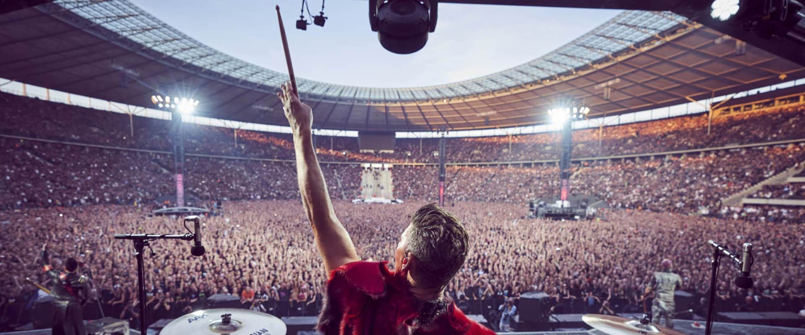

Interpret
Rammstein

Kapela, která nikdy nebyla minimalistická, poprvé na stadionech — a každý z nich má jinou akustiku i jiný tvar.
Rok 2019 patřil fanouškům Rammstein: 34 koncertů v 17 evropských státech včetně České republiky. Zvuk měla pod palcem rentalová společnost SSE, video partnerský Solotech. Systémový návrh musel respektovat specifikace každého jednoho stadionu — a hlavní obava kapely mířila právě na kvalitu zvuku.

Osmnáct K1 a čtyři K2 na každé straně pódia — páteř pokrytí celého stadionu.
Čtyři věže po šestnácti K1 a čtyřech K2 dotahovaly zvuk do vzdálených sektorů.
Osm závěsů po dvanácti K2 pod konstrukcí stadionů.
Pokrytí prvních řad po celé šíři pódia.
Dva závěsy po dvaceti K1-SB, dalších 68 kusů KS28 na zemi.
Přenos zvuku po síti Milan AVB, síťová vrstva Luminex.
PRO MUSIC = výhradní distributor L-Acoustics pro ČR a SK.
Návrh vznikl ve trojici: hlavní tour systémový inženýr Andreas Vater, projektový manažer SSE Miles Hillyard a technické oddělení L-Acoustics. Při zkouškách se doladila celá AVB síť — a během turné byl systém naprosto stabilní.
„Volba systému od L-Acoustics se znovu ukázala jako správná."